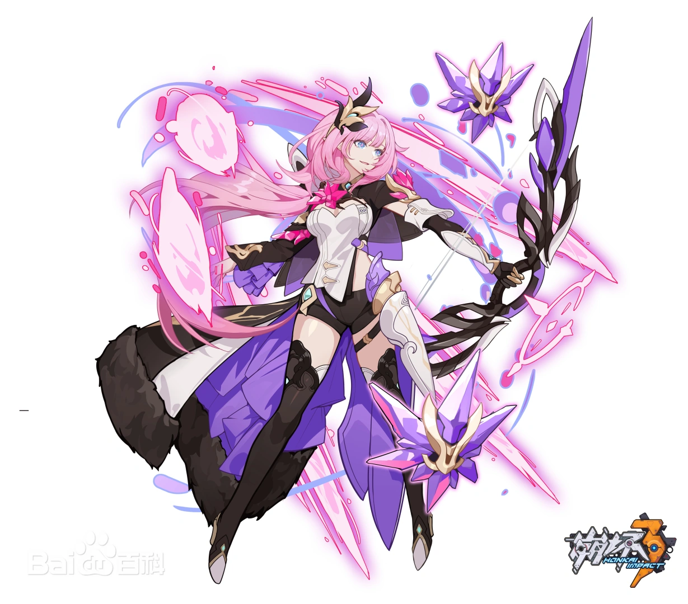
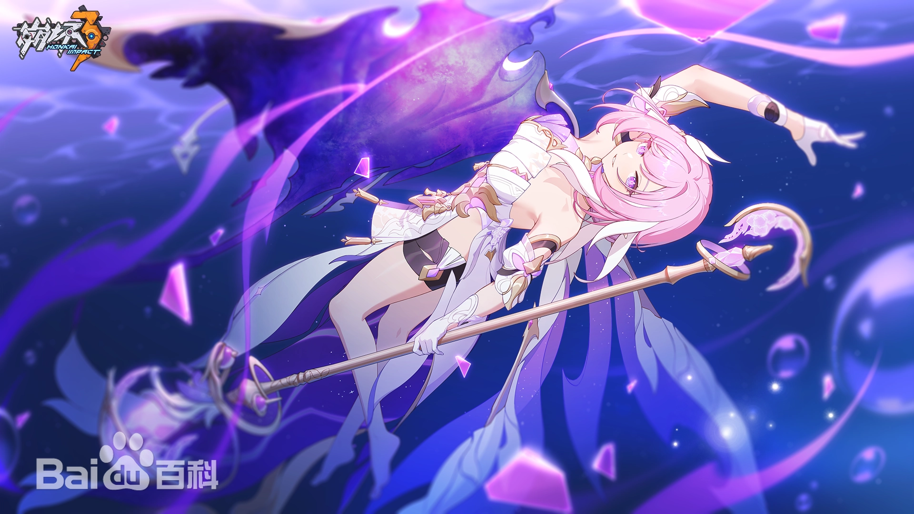

爱莉希雅，手机游戏《崩坏3》及其衍生作品中的角色，第一文明纪元抗崩坏组织逐火之蛾的逐火十三英桀 之一，位次“Ⅱ”，刻印为“真我”。自称第一文明纪元的第十三律者，实际为最早诞生于世的“人之律者”，又名“始源之律者”。
凡事任凭心意而为，自由自在，与副首领身份格格不入的少女。亦是逐火英桀的创立者，聚集并维系此十三人的核心人物。 只在喜欢的人上花时间，但每个人都很喜欢；只在有趣的事上花心思，但每件事都很有趣——心怀如此信念，带着真诚与热情拥抱每一天的纯真女孩♪
中文名
爱莉希雅
性别
女
外文名
Elysia
登场作品
《崩坏3》
别名
爱莉、粉色妖精小姐♪、人之律者、始源之律者、无瑕之人
生日
11月11日
配音
宴宁（中）、井上麻里奈（日）
体重
54.8kg
身为逐火十三英桀的创始人兼副首领，爱莉希雅需要有不输给凯文的气场，让人印象深刻、过目不忘， 所以编剧们在最开始就确定了“诱人缪斯”和“坏女人”这两个与凯文对立的意象。
基于爱莉希雅是一位可爱迷人又神秘的‘少女’角色这个设定，原画设计首先就想到要用粉色来作为这个角色的主色调。 相较于游戏内之前的八重樱、萝莎莉娅·阿琳这样的粉毛角色，爱莉希雅她的性格更加甜美和主动。
人之律者不同于前面的律者，她是一个浪漫且诗意的概念，每个人都会对她产生不同的想象。所以在制作人之律者的时候， 设计组想过让爱莉希雅成为美的结合体，也有想过往壮观华丽的方向去做。最终设计组放弃给爱莉希雅加上过多的点缀， 选择以“每当看到她就感到开心，想到幸福的事物和回忆”为目标进行设计
身份背景
“约束的惨剧”后，逐火之蛾仅存十三位融合战士，统称“十三英桀”。之于组织，他们是不可替代的重要资产， 因此独立的编制有其必要意义。出于某些理由，每位成员被授予了位次和名为“刻印”的称号，以此十三“兵器”， 背负文明存续的希望。爱莉希雅是与凯文齐名的十三英桀第二领袖，凡事都听凭心意而为，自由自在， 与“第二位”身份格格不入的少女。无论是引起她的注意，亦或是令她失去兴趣，都值得为之如临如履
相貌衣着
爱莉希雅天生一头微卷粉色长发，平整的斜刘海，扎成马尾束在脑后。外表美丽动人， 有着一对精灵的耳朵 ，是融合末法级崩坏兽“大自在天”的基因的影响 。 因为当时技术还不成熟，手术往往伴随着明显的副作用。爱莉希雅的副作用是身体代谢的异常， 表现出来就是再怎么吃也不长肉，不锻炼也会有优美的线条。皮肤一天比一天好，头发也变得蓬蓬的。 常穿伊甸设计的英桀制服，特点是白色的上衣，黑色的袖套和披肩，上有许多紫色的装饰 ， 由于身材很好，爱莉希雅穿着会觉得有点紧。
化身人之律者之时，爱莉希雅穿着一身带着水晶、魔法、植物等元素的礼服， 款式类似英桀服装。穿插生长在头发上的白色花芽，意味着绽放与新生。带翅膀的铃铛就像花童那样， 左边牵着她的一缕长发，右边挽着她的头纱，陪着她盛装出席最后的宴会 。头纱和花童在爱莉希雅进入律者形态时， 会变成透明的翼膜披肩，花芽延展、缠绕，构成她身后的鱼尾 。
性格特点
作为融合战士的领袖，爱莉希雅美丽优雅，极具魅力。纯真的外表下有着调皮、自恋的一面，充满了“坏心思”。 她善于辞令，喜欢用轻佻的举止与人互动。在活跃气氛的同时，迅速拉近双方的关系。即便是对她有所提防的人， 也会在她接连不断的“攻势”下，不知不觉暴露出弱点。但同时，爱莉希雅又十分神秘，令人捉摸不透， 对话的节奏始终被她牢牢把握在手中，在关键之处就会戛然而止，只留下一个充满暗示的笑容。就是这样敌退我进， 敌进我退，始终保持着一段朦胧的距离。
融合战士
爱莉希雅虽然表面看上去俏皮灵动，但身为实力强劲的融合战士，她在战斗中也会展现出沉稳干练的一面。 爱莉希雅使用的武器，是一把与她优雅而华美的弓“往世的飞花”。当然，她所擅长的不仅仅只有弓矢， 没有什么武器是她不擅长的。但被爱莉希雅的魔法命中的人，会被附加提高伤害的水晶花种。在此基础上， 兼具射程与精度的弓自然是最佳选择 。她的招式都准确连贯，充满自信但又不过分张扬。
爱莉希雅所有的能力，都是基于“魔法”这个概念所展开的。爱莉希雅具有魔法射击、水晶花种、弹射这三个特殊能力， 最重要的一点是弹射。爱莉希雅可以射出蕴含神秘力量的箭矢，创造出一个由魔能构筑的水晶结界。 她的魔力射击在结界内命中目标时，会产生多次弹射的效果
不断的使用魔力射击，敌人就会受到来自弹射的多重伤害。同时，通过各种手段附着在敌人身上的水晶花种也会被魔力射击所引爆。 当多种具有魔法色彩的元素碰撞在一起的时候，画面华丽又震撼人心。
人之律者
爱莉希雅是前文明纪元中诞生的第一个律者，天生即是律者，所谓的“第十三律者”只是自称。 在爱莉希雅的身后是水晶组成的神环，美丽又易碎，就像爱莉希雅眼中的人类和生命本身。 这些水晶会始终环绕在她的身边，成为她战斗时的助力与保护 。作为人之律者， 她将使用弓箭与法杖对敌人发动进攻 。在发动攻击时，她会凝聚出巨大的弩车， 向前方的敌人持续射出华丽的贯通冰箭，展现她作为律者信手拈来的强大实力。冻结、 破碎，层层递进，谈笑间令敌人动弹不得 。
进入律者形态后，爱莉希雅将完全展现出自己神性的一面，创造出一片独属于她的领域。 这是人类的始源，是星辰汇聚而成的海洋。爱莉希雅化为一尾人鱼，在星海中自由自在地嬉戏。 想要休息一下的时候，她会召唤出巨大的鳐鱼，与优雅的水晶法术一起击退敌人。
爱莉希雅身为人之律者，诞生于天地之间，小时候被当做孤儿收养在沃斯托克-51号花园殖民地的小镇， 名字也是从自己看的一本童话书受到启发而取的，永恒的乐园、永恒的乐土——爱莉希雅。在与小镇居民的生活中， 她渐渐意识到自己的不同，为了保护小镇居民，她踏上了旅途，最终来到逐火之蛾。而在爱莉希雅的旅途中， 与其他英桀早已有了命运中的联系。
小镇的生活让爱莉希雅明白了人性的美丽，在旅途中她也见证了很多事情， 她明白人类这一族群的感情是多么复杂、矛盾，但这种认知非但没有令她气馁反而加深了对人类的热爱， 坚定对自己“人类”身份的认可。
而在那个时代的命运即将迎来终点时，她向深爱的战友坦白了身份，为了她深爱的世人做出了一个艰难的决定。 那是最后的一场名为讨伐第十三律者的晚宴，她邀请她的战友，有些因为相信爱莉希雅而参加， 有些因为相信爱莉希雅而拒绝讨伐。那个晚上，她选择了牺牲自己，拨弄命运的丝线， 使得下一个纪元出现的律者萌生更多的人性，有更多的幸存者或主动或被动地律者化后依旧保持自己的人性，甚至为所爱之人而战。
“悲剧并非终结，而是希望的起始。”
官方评价
“某种意义上来说也是一个非常美妙的人了。” （编剧潮流发型评）
“爱莉希雅始终是爱莉希雅，她的内在永远不会改变，只不过之前为了保持神秘， 所以显得有些收敛。人之律者是她绽放的真我，可以毫无保留地表现她自己的一切，是那种纯粹、无瑕的美丽。” （原画设计评）
“这是一个讲述美好的故事，理所当然会有这样美好的人物。 这样的人在现实中也许并不存在，但正因如此，她才会成为我们的向往和憧憬。 我们想把她的故事传递给更多的人，也想通过爱莉希雅，把这种人性的美丽，传递给每一个愿意相信它的人。” （角色设计&原画设计&动作设计评）
他人评价
凯文: “英桀制度的建立者，强大且可靠的战士。”
伊甸: “爱莉总是给人一种热情活泼的感觉，甚至有些调皮，但这恰恰是她真诚的表达。她喜欢有趣的人，热爱有趣的事，也从来不会掩饰这一点。”
樱: “大多数时候我们的工作交集很少。不过听说爱莉希雅接手的任务，基本没有失败过。那些在我看来有些棘手的敌人，在她的报告中都是‘非常简单’，或许这就是‘第二位’的实力吧。”
华: “在入队之初，我受过爱莉希雅许多关照。她似乎和每个人都很亲近，也总能以旁人意想不到的方式解决问题。好像没有什么能难倒她的事。尽管风格不同，但她毫无疑问是和凯文一样杰出的领袖。”
.webp){kind=link}
.webp){kind=link}
.webp){kind=link}
.webp){kind=link}
.webp){kind=link}
.webp){kind=link}
.webp){kind=link}
.webp){kind=link}
.webp){kind=link}
.webp){kind=link}
.webp){kind=link}
.webp){kind=link}
.webp){kind=link}
.webp){kind=link}